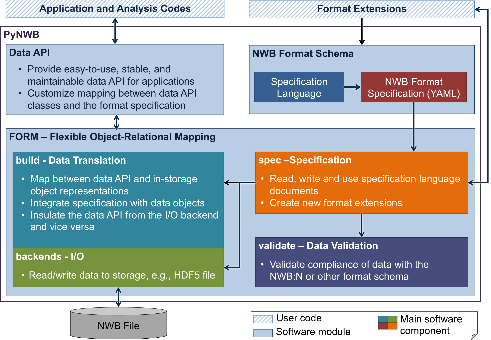
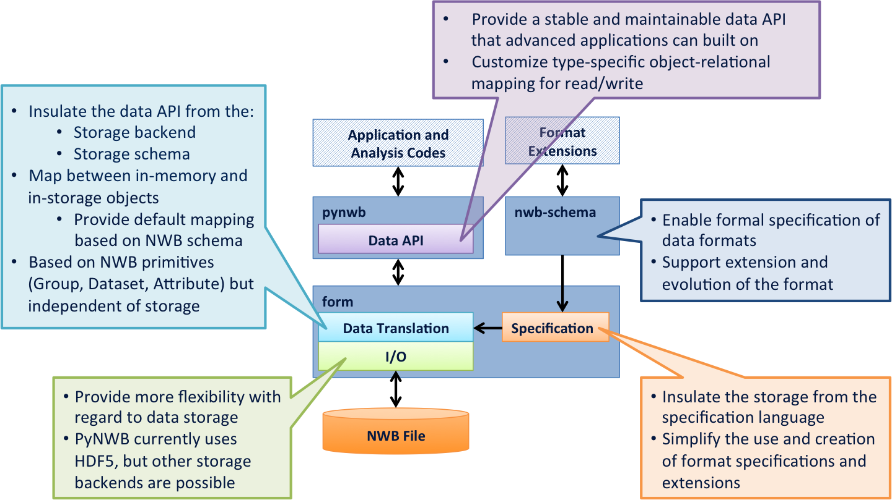
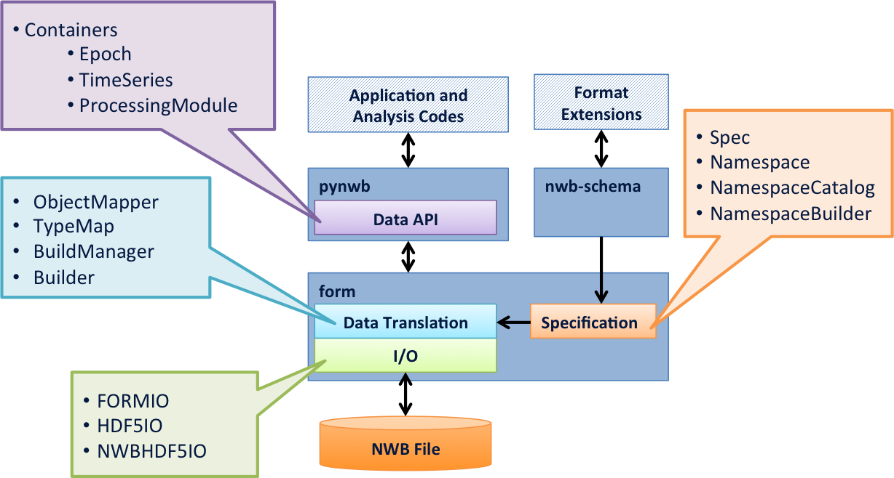
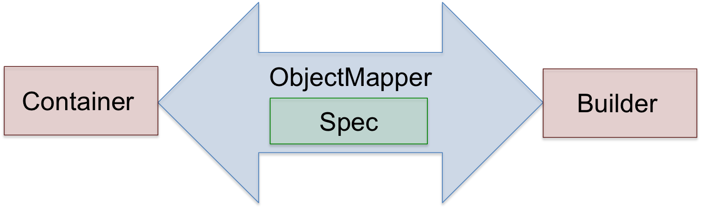
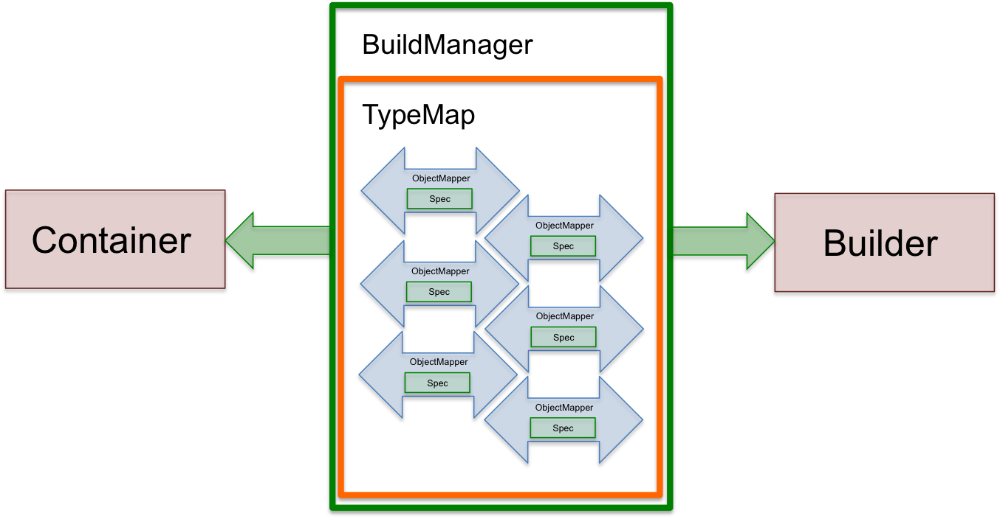
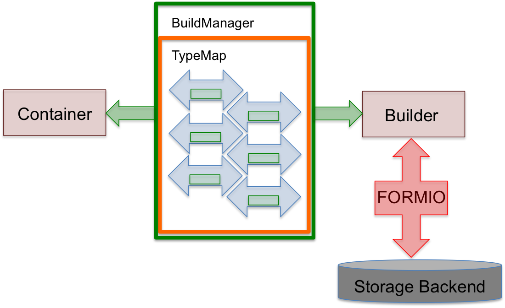

Software Architecture
The main goal of PyNWB is to enable users and developers to efficiently interact with the NWB data format, format files, and specifications. The following figures provide an overview of the high-level architecture of PyNWB and functionality of the various components.
{kind=link}

Overview of the high-level software architecture of PyNWB (click to enlarge).
{kind=link}

We choose a modular design for PyNWB to enable flexibility and separate the various aspects of the NWB:N ecosystem (click to enlarge).
Main Concepts
{kind=link}

Overview of the main concepts/classes in PyNWB and their location in the overall software architecture (click to enlarge).
Container
In memory objects
Interface for (most) applications
Like a table row
PyNWB has many of these – one for each neurodata_type in the NWB schema. PyNWB organizes the containers into a set of modules based on their primary application (e.g., ophys for optophysiology):
Builder
Intermediary objects for I/O
Interface for I/O
Backend readers and writers must return and accept these
There are different kinds of builders for different base types:
GroupBuilder- represents a collection of objectsDatasetBuilder- represents dataLinkBuilder- represents soft-linksReferenceBuilder- represents a reference to another group or dataset
Main Module:
hdmf.build.builders
Spec
Interact with format specifications
Data structures to specify data types and what said types consist of
Python representation for YAML specifications
Interface for writing extensions or custom specification
There are several main specification classes:
NWBAttributeSpec- specification for metadataNWBGroupSpec- specification for a collection of objects (i.e. subgroups, datasets, link)NWBDatasetSpec- specification for dataset (like and n-dimensional array). Specifies data type, dimensions, etc.NWBLinkSpec- specification for link (like a POSIX soft link)RefSpec- specification for references (References are like links, but stored as data)NWBDtypeSpec- specification for compound data types. Used to build complex data type specification, e.g., to define tables (used only inDatasetSpecand correspondinglyNWBDatasetSpec)
Main Modules:
hdmf.spec– General specification classes.pynwb.spec– NWB specification classes. (Most of these are specializations of the classes fromhdmf.spec)
Note
A data_type (or more specifically a neurodata_type in the context of
NWB) defines a reusable type in a format specification that can be
referenced and used elsewhere in other specifications. The specification of
the NWB format is basically a collection of neurodata_types, e.g.:
NWBFile defines a GroupSpec for the top-level group of an NWB format
file which includes TimeSeries, ElectrodeGroup, ImagingPlane
and many other neurodata_types . When creating a specification, two
main keys are used to include and define new neurodata_types
neurodata_type_incis used to include an existing type andneurodata_type_defis used to define a new type
I.e, if both keys are defined then we create a new type that uses/inherits an existing type as a base.
ObjectMapper
Maintains the mapping between Container attributes and Spec components
ObjectMappers are constructed using a Spec
Ideally, one ObjectMapper for each data type
Things an ObjectMapper should do:
PyNWB has many of these – one for each type in NWB schema
Main Module:
hdmf.build.objectmapperNWB-specific ObjectMappers are locate in submodules of
pynwb.io
{kind=link}

Relationship between Container, Builder, ObjectMapper, and Spec
Additional Concepts
Namespace, NamespaceCatalog, NamespaceBuilder
Namespace
A namespace for specifications
Necessary for making extensions
Contains basic info about who created extensions
Core NWB:N schema has namespace “core”
Get from
pynwb.spec.NWBNamespaceextension of generic Namespace class that will include core
NamespaceCatalog– A class for managing namespacesNamespaceBuilder– A utility for building extensions
TypeMap
Map between data types, Container classes (i.e. a Python class object) and corresponding ObjectMapper classes
Constructed from a NamespaceCatalog
Things a TypeMap does:
Given an NWB data type, return the associated Container class
Given a Container class, return the associated ObjectMapper
PyNWB has two of these classes:
the base class (i.e.
TypeMap) - handles NWB 2.xpynwb.legacy.map.TypeMapLegacy- handles NWB 1.x
PyNWB provides a “global” instance of TypeMap created at runtime
TypeMaps can be merged, which is useful when combining extensions
BuildManager
Constructed from a TypeMap
PyNWB only has one of these:
hdmf.build.manager.BuildManager
{kind=link}

Overview of BuildManager (and TypeMap) (click to enlarge).
HDMFIO
Abstract base class for I/O
HDMFIOhas two key abstract methods:write_builder– given a builder, write data to storage formatread_builder– given a handle to storage format, return builder representation
Constructed with a BuildManager
Extend this for creating a new I/O backend
PyNWB has one extension of this:
{kind=link}
